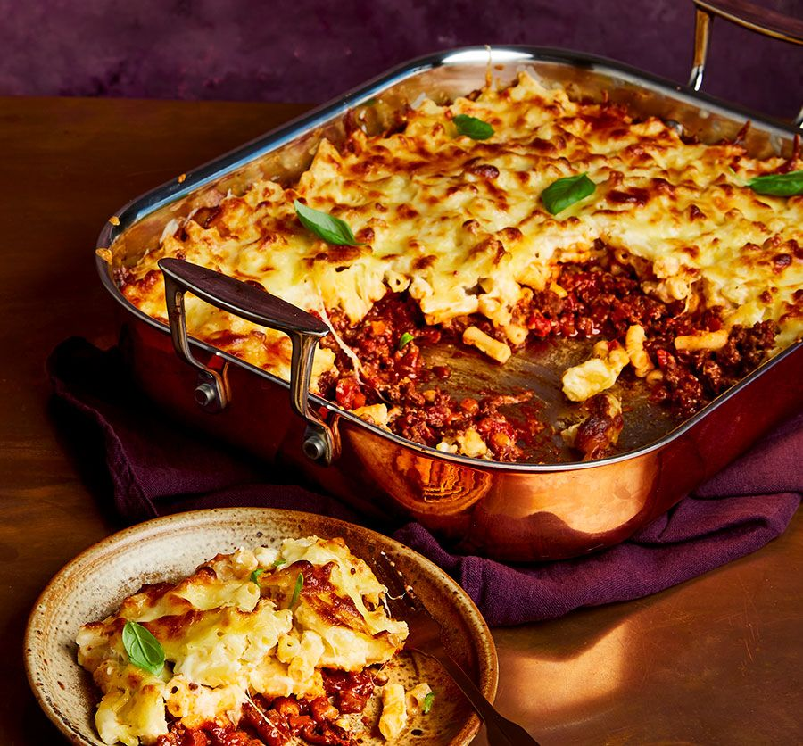
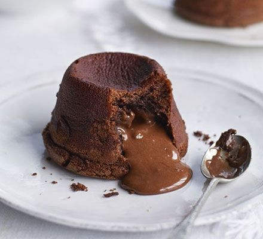

Macaroni Cheese Lasagne
Ingredients
- 2 tbsp olive oil
- 400g lean beef mince
- 50g smoked pancetta, chopped
- ½ onion, finely chopped
- ½ celery stick, finely chopped
- ½ carrot, finely chopped
- 1 garlic clove, crushed
- 150ml red wine
- 1 tbsp tomato purée
- 400g can chopped tomatoes
- 250ml beef stock
- 2 bay leaves
- 1 rosemary sprig
- 1 tsp sugar
- 400g macaroni
- 80g grated mozzarella
- a few whole basil leaves, to serve (optional)
For the Cheese Sauce
- 50g butter
- 50g plain flour
- 2 tsp English mustard
- 800ml semi-skimmed milk
- small grating of nutmeg
- 100g grated parmesan
- 100g mature cheddar, grated

Method
STEP 1
Heat half the oil in a large, heavy-based frying pan or casserole dish over a medium-high heat, and fry the mince and pancetta until golden. Transfer to a bowl using a slotted spoon and set aside.
STEP 2
Add the remaining oil to the pan and fry the onion, celery and carrot for 10 mins until just softened. Add the garlic and cook for 1 min more, then return the meat to the pan.Tip in the wine, bring to a simmer and cook until the mixture is reduced by half. Stir in the tomato purée, tomatoes, stock, bay, rosemary and sugar. Simmer, covered, for 30 mins, then remove the lid and simmer uncovered for another 10 mins until reduced.
The ragu will keep in the freezer for up to two months. Leave to cool completely before freezing.
STEP 3
Meanwhile, make the cheese sauce. Melt the butter in a saucepan until foaming, then stir in the flour and cook for 2 mins. Stir in the mustard, then remove from the heat and gradually whisk in the milk in small additions. Return the pan to the heat and simmer for 5-6 mins, whisking continuously until thick and smooth. Add the nutmeg, parmesan and 80g of the cheddar, then season to taste.
STEP 4
Heat the oven to 200C/180C fan/gas 6, and cook the macaroni in a large pan of boiling water for 5 mins. Drain, then stir into the cheese sauce. Spread the ragu into the base of a large rectangular baking dish (ours was 28 x 22 x 5cm), then spoon over the mac ‘n’ cheese and gently spread out using the back of a spoon to cover the ragu. Top with the remaining cheddar and the mozzarella, and bake for 25-30 mins until golden and bubbling. Leave to rest for 5 mins, then scatter over a few basil leaves to serve, if you like.
Chocolate Fondant
Ingredients
- 200g butter , melted
- 3 tbsp cocoa powder , for dusting
- 50g caramel sauce
- 200g dark chocolate , chopped
- 4 tbsp very strong coffee powder (espresso is ideal)
- 6 eggs , three whole, plus the yolks of 3 (freeze the leftover egg whites for another recipe)
- 75g golden caster sugar
- 50g plain flour
You will need:
- 6 small metal pudding basins

Method
STEP 1
Use 50g of the butter to brush the insides of the pudding basins. Put them on a baking tray and transfer to the fridge to chill until the butter sets. Brush over another layer of the butter, then dust generously with the cocoa. Return to the fridge to set. Mix the caramel sauce with a good pinch of sea salt flakes, then chill in the fridge until ready to use.
STEP 2
Tip the remaining butter, the chocolate and coffee powder into a heatproof bowl. Set the bowl over a pan of gently simmering water, ensuring the bottom of the bowl doesn’t touch the water. Stir the mixture until smooth, adding another small pinch of sea salt. Tip the whole eggs, egg yolks and sugar into another bowl and beat together using an electric whisk until very pale – the whisk should leave a trail in the mixture when lifted. Sift in the flour, then gently fold in the melted chocolate mixture.
STEP 3
Spoon the fondant mixture into the prepared basins until just about halfway full, then transfer to the freezer on a baking tray for about 20-25 mins, or until the mixture is just set. Add 1 tsp of the salted caramel sauce to the middle of each fondant, then top up with the remaining fondant mixture. Return to the freezer until frozen. Can be prepared up to two weeks ahead.
STEP 4
Heat the oven to 200C/180C fan/gas 6. Put the fondants on a baking tray and bake for 15 mins until the tops have formed a crust and they are starting to come away from the sides of the basins. Remove from the oven, then leave to rest for 1 min before turning out onto warm plates. Sprinkle with extra sea salt, then serve straightaway.